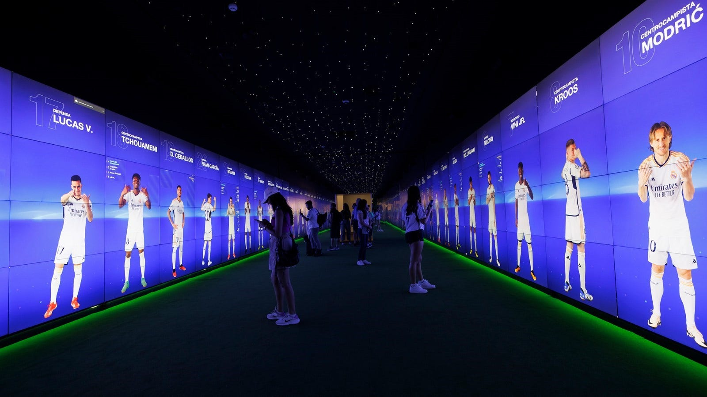

My Experience as a Real-Time Programmer at Sngular Studios
Engine:
Unity
Size of the team:
6
Time:
4 months
My role:
Programmer
As a software developer focused on real-time interactive applications, I’ve worked on some exciting projects, especially for museums. Here's a brief look at two major projects I’ve been part of:
Real Madrid Museum
I handled the development of an interactive experience for the Real Madrid Museum using Unreal Engine 5. It involved syncing 22 computers to display continuous videos and team info. I built a custom Unreal Engine plugin and a C# server to manage everything from video playback to real-time content updates.
Abu Dhabi's Department of Finance
I worked on a RealSense depth camera application for this project, where I implemented gesture detection
for user interaction. I extended a legacy C++ application and developed an Unreal Engine plugin to
enable seamless integration.
Internal tools
One of my biggest contributions at Sngular has been building internal tools for museum management and
improving productivity. These projects set the stage for future interactive exhibits and better tools,
making things run smoother for the team.